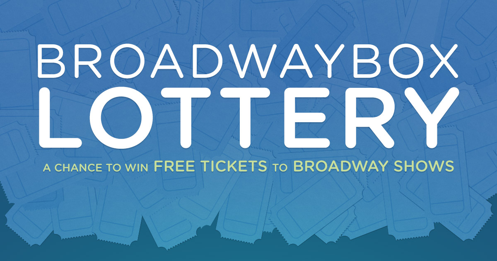

Broadway show ticket lotteries are exactly what their names imply with the exception that no money is exchanged unless you the winner. Lottery winners can score deep discounts on tickets and usually for premium seats, including $10 tickets for Hamilton. Through the lottery system, I have won upwards of 10 tickets to different Broadway Shows for amazing prices. This system allows you so watch Brpadway shows withouot having to deal with the horrendous pricing of the shows.Some shows tickets that you can win are "Aladdin", "Tootsie", "Wicked", etc. The most recent show I won was Beetlejuice. You can find out more and enter the lotteries here.
The seats that Broadway Lotteries offer differentiate between shows. When I saw "Mean Girls" with the lottery, the seats were far back, but with "Hamilton", I was in the first row. Usually, the seats are full-view but there are cases of partial view.
